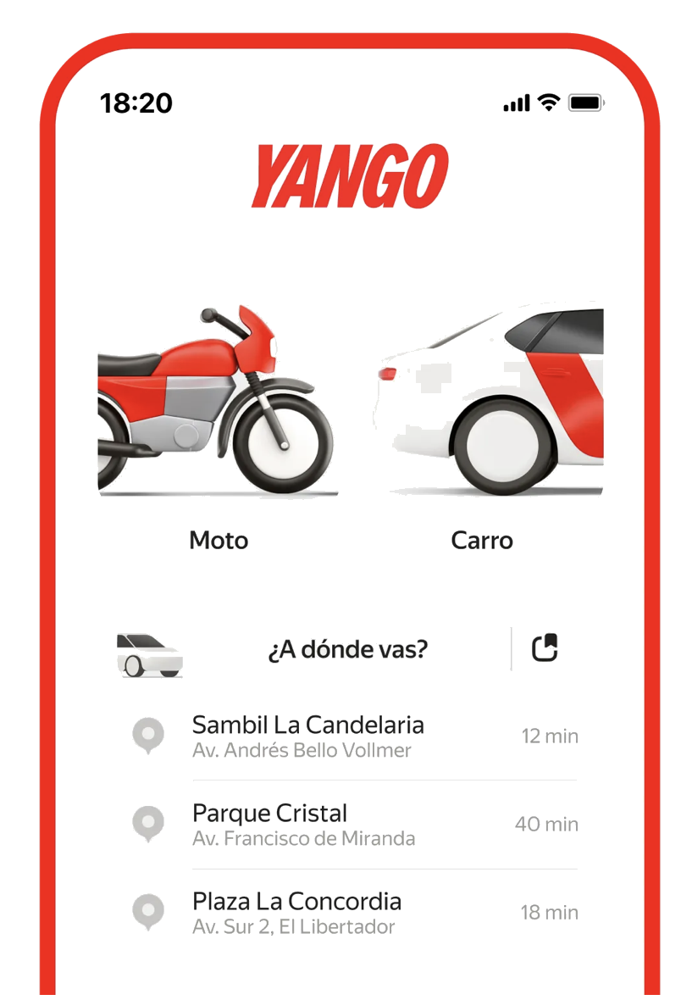
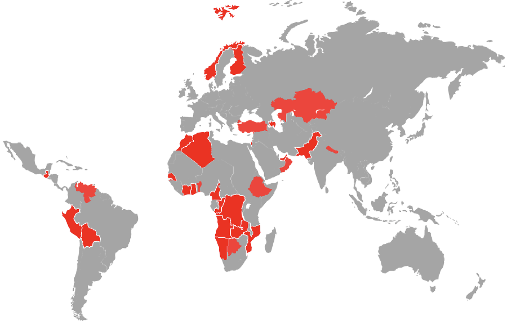
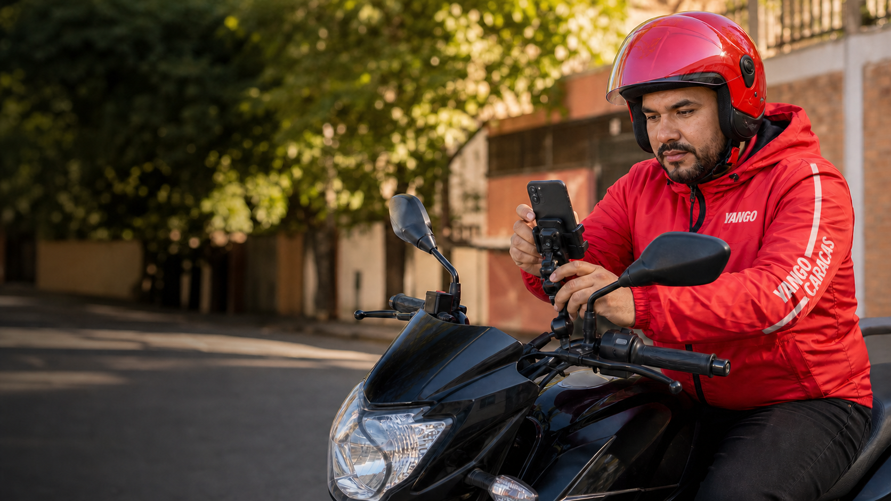
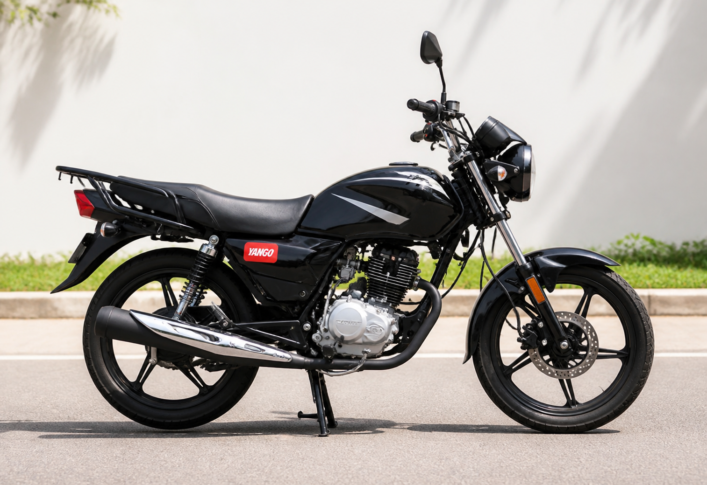
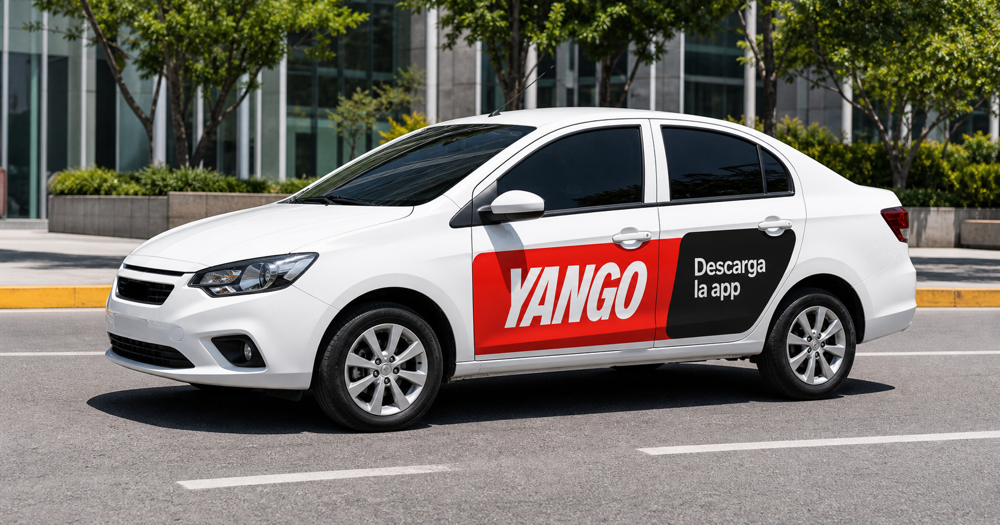
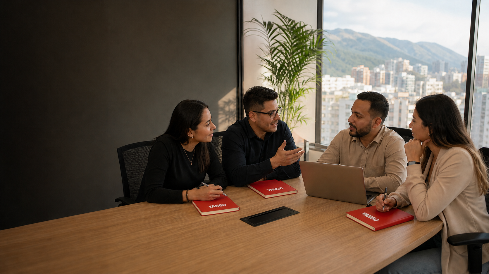

01
Tecnología propia
- Utiliza sistemas propios de mapas y planificación de rutas.
- Optimiza los recorridos y reduce los tiempos de espera.
- Ofrece servicios de transporte, entregas y mensajería.
Portal de onboarding · Venezuela
Una guía práctica para configurar tu operación, gestionar conductores, entender el modelo financiero y desarrollar una flota sostenible.

Yango conecta tecnología global con empresas locales que acompañan a los conductores y administran la operación en cada mercado.
Tecnología global adaptada a cada mercado.

Un partner de Yango es una empresa local que conecta la tecnología de la plataforma con los conductores de su mercado. Es responsable de construir y acompañar su flota: atrae nuevos conductores, los ayuda a completar su activación, gestiona aspectos financieros y ofrece soporte operativo cercano.
Yango proporciona la tecnología, la marca y las herramientas de gestión. El partner aporta el conocimiento local, el equipo humano y la relación diaria que permiten que la operación crezca de forma sostenible.
El partner participa activamente durante todo el ciclo de vida del conductor.
La tecnología global conecta a los usuarios con proveedores de transporte locales. El partner convierte esa tecnología en una operación cercana:
Cinco ideas para entender cómo funciona el mercado.
La operación genera dos comisiones y el partner recibe ambas en bolívares.
Los bonos se descuentan primero de la deuda acumulada.
Cuatro movimientos explican el flujo del dinero.
El partner administra la operación, mientras el conductor continúa siendo el beneficiario y prestador del servicio.
El partner actúa frente a Yango en nombre propio, pero por cuenta del conductor. Su ingreso es la comisión de agencia; los demás montos son fondos administrados para el conductor.
Presta el servicio, recibe el beneficio económico y otorga el mandato digital.
Administra la operación, los fondos y la documentación; descuenta su comisión.
Proporciona tecnología, marketing y los reportes necesarios para calcular y facturar.
| # | Documento | Emitido por | Emitido a | Propósito |
|---|---|---|---|---|
| 01 | Factura por servicios de marketing (incluye 16 % de IVA) | Partner | Yango | Cobrar los honorarios de marketing o subsidios en nombre propio del partner, pero por cuenta de los conductores. |
| 02 | Autofactura de IVA por el contrato SaaS | Partner | Interno / SENIAT | Declarar y pagar el IVA por inversión del sujeto pasivo sobre los servicios recibidos de Yango. |
| 03 | Factura por comisión de agencia (incluye 16 % de IVA) | Partner | Conductor | Cobrar la comisión por los servicios de agencia. Puede incluir cargos o recargos relacionados con esos servicios. |
| 04 | Desglose de liquidación (finiquito) | Partner | Conductor | Detallar la comisión y su IVA, los montos de marketing, lo cobrado a usuarios mediante la plataforma y la entrega de fondos netos al conductor. |
| 05 | Copias de recibos o facturas emitidos a usuarios por cuenta de los conductores | Partner | Conductor | Respaldar los registros del conductor, indicando que el transporte está exento de IVA. |
| 06 | Reportes electrónicos de Yango (comisión SaaS y honorarios de marketing) | Yango | Partner | Servir como base para calcular los montos adeudados y preparar las facturas. |
Una ruta práctica para activar tu operación, acompañar conductores y aprovechar Fleetroom.
Comenzar ↓Cinco pasos esenciales para comenzar a operar.
Completa los datos de contacto y de tu empresa.
Completa la integración y recibe tus accesos.
Configura Fleetroom y las herramientas de gestión.
Revisa procesos operativos, financieros y de soporte.
Incorpora conductores y comienza a desarrollar tu flota.
Tu operación conecta a los conductores con las herramientas y procesos de Yango.
Gestiona conductores, desempeño, pagos, adquisición y soporte desde fleet.yango.com, sin instalar programas.

El objetivo es eliminar fricciones, completar el primer viaje y sostener un buen nivel de actividad.
Recomendaciones para activar, acompañar y proteger la experiencia de tus conductores.
La aplicación acompaña al conductor antes, durante y después de cada viaje.
Cada conductor pasa por 5 etapas. Saber en cuál está te dice exactamente qué hacer con él.
Se registró (formulario, QR o link) pero aún no inició sesión en Yango Pro ni completó verificación.
Ya inició sesión y pasó el photocheck, pero todavía no completa su primer viaje o lleva menos de 14 días activo.
Conductor con actividad reciente y consistente. Genera viajes y GMV de forma regular.
Había dejado de estar activo y volvió a conectarse y tomar viajes tras una campaña o contacto directo.
Sin viajes por un periodo prolongado (según Fleetroom, >45 días sin actividad pasa a "Archivado").
Comparte estos canales para que tus conductores reporten problemas y reciban respuesta rápida.
Sirve para reportar problemas con recargas, pagos de usuarios o disminución de puntos. La recomendación es que reporten los problemas por acá ya que podemos enviarles una respuesta rápidamente. Tiempo de respuesta: 24 horas hábiles.
https://t.me/YangoSoporte_bot Abrir bot →Para reportar cuando el conductor pagó una recarga y no la registró en la app, o cuando pagó, la registró, y el saldo no se sumó a su billetera.
Ver formulario Abrir formulario →Para reportar cuando el rider no pudo reportar el pago, le hizo el pago directo al driver, pagó por la app y no le aparece al driver, o hizo el pago dos veces (por la app y al conductor).
Ver formulario Abrir formulario →Para reportar cuando el rider o el driver cancelaron el viaje por razones válidas (menor de edad, mascota a bordo, conductor alcoholizado, objetos pesados, más de 3 acompañantes, problemas con branding, entre otras).
Ver formulario Abrir formulario →🎬 Videos educativos para conductores
Comparte estos videos con tus conductores para que aprendan a usar la app correctamente.
Yango Pro es la herramienta de trabajo diaria del conductor. Desde una sola aplicación puede conectarse, recibir viajes, revisar sus ganancias, consultar bonos y pedir ayuda. Como partner, conocer estas funciones te permite orientarlo de forma rápida y sencilla.
Los conductores de carros y motos pueden recibir bonos diferentes según la cantidad de viajes completados y el branding de su vehículo.
Yango Venezuela actualiza los montos cada semana. El conductor puede revisar su meta y progreso directamente en la aplicación.
Presiona “Conectarse” para comenzar a recibir solicitudes de viaje.
Aceptar y completar viajes ayuda a mantener la prioridad. Las cancelaciones pueden reducirla.
El mapa muestra las zonas y horarios donde existe mayor demanda y pueden aplicarse incentivos.
El conductor puede configurar si desea recibir viajes en efectivo, por la app o ambos.
La aplicación puede ofrecer una nueva solicitud antes de terminar el viaje actual.
Se configura desde Mi información → Información para cobros → Cuenta bancaria.
Todo conductor arranca con una base de puntos, y dos factores adicionales pueden sumarle más.
Todo conductor arranca por defecto con 100 puntos Pro, sin necesidad de hacer nada adicional.
Por tener los stickers/branding de Yango colocados en el vehículo, el conductor sube hasta 120 puntos.
Para conductores activos que cumplan cierto número de horas de servicio (SH) en semanas anteriores, tengan o no stickers.
Resultado: un conductor puede tener 100, 115, 120 o 135 puntos según su estatus (base, solo stickers, solo actividad, o ambos). A mayor cantidad de puntos, más viajes recibe.
Importante: este puntaje es tu máximo posible, no un valor fijo. Dependiendo de las acciones del conductor — como rechazar viajes o cancelar solicitudes sin justificación — el conductor va perdiendo puntos con el tiempo. Mantener un buen puntaje requiere aceptar y completar viajes de forma consistente.
Los stickers deben colocarse en los laterales del vehículo, porque esa es la zona que revisa el photocheck. Elige una superficie lisa y asegúrate de que queden bien adheridos, sin arrugas ni burbujas.

Yango suministra estos materiales al partner, quien se encarga de entregarlos a los conductores.
Vinilo adhesivo impreso con el diseño rojo de Yango.
Vinilo adhesivo impreso con el diseño rojo de Yango.
Vinilo adhesivo impreso con el diseño rojo de Yango.
Logo blanco de Yango sin fondo.

Además de los stickers pequeños, existe un programa de brandeo de carros con incentivos para los conductores.
Al final de cada viaje el app muestra el monto exacto a cobrar. El precio lo determina Yango, no se negocia.
Está prohibido iniciar o completar un viaje sin que el pasajero esté a bordo.
Finalizada la carrera, el conductor no debe contactar al pasajero por ningún medio. Su información es privada.
Yango impulsa el uso de la plataforma para que cada partner pueda desarrollar una oferta de conductores preparada para atenderla.
El trabajo de Yango es generar demanda de viajes y fortalecer la marca. Con más usuarios solicitando servicios, el partner puede aumentar y acompañar su oferta de conductores para mantener vehículos disponibles, reducir tiempos de espera y hacer crecer su operación.
Creadores de contenido comunican beneficios y promociones de Yango.
Carteles, vallas y publicidad exterior aumentan la visibilidad para que más personas conozcan y recuerden Yango.
Instagram y TikTok informan, atraen usuarios y fortalecen la marca.
Acciones en ciudades clave estimulan el uso de la aplicación.
El partner recluta, informa y acompaña a los candidatos. Combina canales, mide resultados y guía a cada conductor hasta su primer viaje.
Inversión total del canal ÷ nuevos conductores activos obtenidos
Las campañas más efectivas muestran personas reales, beneficios claros y un siguiente paso simple.

Encuentra respuestas, materiales de capacitación y recursos para acompañar a tu equipo y a tus conductores.
Un socio Yango es una empresa que actúa como intermediario entre Yango y los conductores. El socio se encarga de reclutar conductores, pagarles, brindarles soporte operativo y gestionar su desempeño usando Fleetroom. Es el elemento humano y local que diferencia a Yango de otras plataformas.
El proceso tiene 4 etapas: 1) Registro del perfil en Fleetroom. 2) Inicio de sesión en Yango Pro. 3) Verificación de fotos (documentos, vehículo y foto de perfil). 4) Completar el primer viaje exitosamente. Si un conductor no completa la activación en 30 días, pasa automáticamente al segmento "Archivados". Se recomienda hacer seguimiento activo durante todo el proceso — revisa la sección "Conductores" para ver el ciclo de vida completo.
Venezuela opera en un contexto de dolarización parcial. Para proteger el valor de las ganancias de conductores y socios frente a la inflación y devaluación del bolívar, Yango calcula tarifas y bonos en dólares americanos (USD). El pago al conductor se realiza en bolívares al tipo de cambio oficial del Banco Central de Venezuela (BCV) vigente al momento del pago, garantizando que los ingresos mantengan su poder adquisitivo.
El Pago Móvil es una transferencia bancaria instantánea y gratuita entre cuentas venezolanas. Para usarlo necesitas: número de teléfono, número de cédula o RIF y banco de destino. Se realiza desde la app del banco o banca web.
Fleetroom genera links y QR de auto-registro para campañas en WhatsApp e Instagram. También puedes poner scouts en zonas de alta afluencia de conductores: estaciones de gasolina, semáforos, autolavados y terminales. Revisa la sección "Marketing" de esta guía para más canales de adquisición.
En Fleetroom, abre Fondos y pagos → Cuentas y viajes. El saldo correspondiente a la comisión de Yango está expresado en USD.
Revisa su etapa en Contratistas, identifica si falta iniciar sesión, completar un photocheck o realizar el primer viaje y registra una nota con fecha de seguimiento.
Cuando el caso no pueda resolverse con las herramientas del partner. Adjunta datos completos, evidencias y una descripción clara del resultado esperado.
Mantén el saldo por encima del límite indicado, verifica cada recarga y revisa con frecuencia el historial de movimientos.
Puedes reportarlo directamente por el Bot de Telegram (@YangoSoporte_bot) o mediante los formularios de Problemas con Recargas, Problemas con Pagos de Usuarios o Restitución de Puntos. El tiempo de respuesta es de 24 horas hábiles. Encuentra todos estos links en la sección "Conductores" de esta guía.
Para que la verificación fotográfica (photocheck) sea aprobada, el conductor debe aparecer con el casco puesto (en el caso de moto) y con la camisa/uniforme de Yango puesta. Si falta alguno de estos elementos, el sistema puede rechazar la foto. Si el problema persiste tras varios intentos, debe reportarlo por el formulario de "Problemas con Branding" o contactar a su socio.
Un conductor brandeado es aquel cuyo vehículo tiene los stickers/branding oficial de Yango colocados correctamente. Esto le suma puntos al Nivel Pro y aumenta significativamente el monto de sus bonos semanales. Un conductor no brandeado puede operar igualmente, pero recibe bonos más bajos y menos prioridad en la asignación de viajes frente a un conductor brandeado con el mismo desempeño. Se recomienda siempre incentivar el branding como parte del proceso de activación.
Cada inicio de semana, los conductores seleccionan un objetivo (número de viajes) dentro de Yango Pro. Al completarlo reciben un bono adicional calculado en USD. Existen bonos diferenciados para carros y para motos, y los conductores con branding en su vehículo reciben bonos más altos. También existen bonos de zona dinámica (hasta +30% por viaje en zonas y horarios de alta demanda). Los bonos los cubre Yango, y los socios reciben el pago correspondiente todos los lunes.
El Nivel Pro es el sistema de puntos de Yango que determina cuántos pedidos recibe cada conductor. Todo conductor arranca con 100 puntos base; suma +20 por tener stickers y +15 por actividad reciente (según sus horas de servicio en semanas anteriores), pudiendo llegar hasta 135 puntos. También suben con calificación mayor a 4.95, y bajan al cancelar o ignorar solicitudes sin justificación válida. Un Nivel Pro alto significa más viajes y más ingresos.
El conductor puede usar "Solución de Problemas" en su perfil de Yango Pro para ayuda con el app, actualización de documentos, problemas con pasajeros, emergencias y bloqueos. Como socio, también puedes elevar casos directamente desde Fleetroom → Servicio de Asistencia, adjuntando capturas como evidencia.
Documentos esenciales para preparar al equipo y consultar procesos operativos.
Presentación general de referencia para la operación de Yango.
Abrir material → Google DocsGuía de soporte y resolución de casos adaptada para Venezuela.
Abrir material → Google DocsManual de consulta para configurar y gestionar la operación desde Fleetroom.
Abrir material →